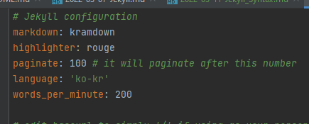
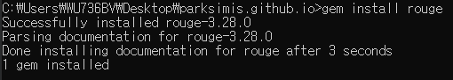

Github Blog 시작기 2 -
syntax
1. Syntax Highlighting
- 코드 가독성과 깔끔한 Code block을 위하여
rouge의 syntax-highlighter를 설치 및 사용하고자 한다.
1-1) rouge란
- Rouge-ruby Repo
- Rouge는 pure Ruby syntax highlighter이다.
- Rouge는 가장 대표적으로 사용되는 Ruby 라이브러리임.
- Jekyll에서는 기본적인 syntax 하이라이터로 사용되고, 기본적으로 Rouge는
{% highlight %}템플릿 태그에 wrapping하여 사용함.
- Jekyll에서는 기본적인 syntax 하이라이터로 사용되고, 기본적으로 Rouge는
- Jekyll은
rouge와pygments두 가지의 Syntax Highlighter를 제공했었는데, Jekyll 3 이후부터 Pygments는 지원하지 않음. - 홈페이지를 통해 지원 언어 목록 확인 가능
1-2) rouge 설치
_config.yml을 확인해보면 highlighter가 rouge로 설정이 잡혀있음.
- 실제 설치는 아직 안했으므로, gem을 이용해 rouge를 설치해줘야 함.
- Ruby 실행 후 해당 블로그 폴더로 이동 아래 코드 입력
gem install rouge
- 위와 같은 결과 화면이 나오면 설치 성공
- 스타일 확인하기
rougify help style명령어를 통해 rouge에서 제공하는 code snippet의 스타일을 확인할 수 있다.-
available themes: base16, base16.dark, base16.light, base16.monokai, base16.monokai.dark, base16.monokai.light, base16.solarized, base16.solarized.dark, base16.solarized.light, bw, colorful, github, gruvbox, gruvbox.dark, gruvbox.light, igorpro, magritte, molokai, monokai, monokai.sublime, pastie, thankful_eyes, tulip - 현재 rouge는 위와 같은 스타일들을 제공함.
- 각 테마들을 미리보기하고 싶으면 홈페이지에서 확인 가능
- 필자는
monokai.sublime을 사용하기로 함.
- 스타일시트 생성하기
rougify style monokai.sublime > assets/css/syntax.css
- 위의 명령어로 “assets/css/syntax.css” 위치에 monokai.sublime의 css 파일을 생성할 수 있음.(기존에 있는 경우 덮어쓰기 됨)
- 스타일 적용하기
- 스타일을 적용하기 위해
_layouts/default.html파일에 해당 css 파일 링크를 연결해주어야 함.<!-- Styles'n'Scripts --> <link rel="stylesheet" type="text/css" href="/assets/built/screen.css" /> <link rel="stylesheet" type="text/css" href="/assets/built/screen.edited.css" /> <link rel="stylesheet" type="text/css" href="/assets/built/syntax.css" /> <!-- highlight.js --> - 해당 파일에 syntax.css를 연결해주어야 함.
2. 오류 해결
- 해당 post를 테스트하려고 실행 명령어를 입력한 결과 아래와 같은 오류가 발생했다.
Liquid Exception: Syntax Error in tag 'highlight' while parsing the following markup: Valid syntax: highlight <lang> [linenos] in C:/Users/WU736BV/Desktop/parksimis.github.io/_posts/2022-03-11-Jekyll_Syntax.md
C:/Ruby26-x64/lib/ruby/gems/2.6.0/gems/jekyll-3.9.0/lib/jekyll/tags/highlight.rb:21:in `initialize': Syntax Error in tag 'highlight' while parsing the following markup: (SyntaxError)
Valid syntax: highlight <lang> [linenos]
<중략>
- 엄청난 삽질 끝에 위에 템플릿 태그로 인한 오류인 것을 알게 되었다.
- code block 처리하더라도 템플릿 태그로 인식하는 것 같다.
- 이 경우 앞에 각 코드 시작의 처음과 끝에
{% raw %}와{% endraw %}의 liquid tag를 붙여주어 해당 내용을 파싱하지 않도록 처리해주어야 한다.
3. 마무리
- Rouge를 설치하여 syntax highlight를 변경하는 방법을 학습하였다.
- 과정은 순탄했으나, 사소한 오류 하나로 오랜 삽질을 경험했다.
- 그래도 확실하게 배운 것 같아서 기분이 좋다.